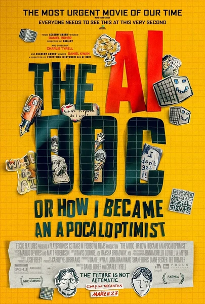

Документальный · 2026 · Документальный
Режиссер Дэниел Роэр готовится стать отцом и решает разобраться, в каком мире предстоит расти его ребенку. В ходе серии откровенных бесед с ключевыми фигурами индустрии искусственного интеллекта он исследует эту сферу: от всеобщего воодушевления и революционных перемен в медицине до опасений по поводу утраты контроля и потери рабочих мест. Формат «личного путешествия» позволяет фильму избежать нравоучительного тона и дает возможность поразмышлять вслух — с той же смесью тревоги и надежды, которую испытывает любой родитель ребенка эпохи цифровых технологий.
Director Daniel Roher is about to become a father and decides to understand the world his child will grow up in. Through a series of candid conversations with leading voices of the AI industry, he maps the field: from enthusiasm and medical revolution to fears about control and job loss. The 'personal journey' format lets the film avoid lecturing and think out loud — with the same mix of anxiety and hope any parent of the digital generation feels.
← Вернуться в каталог IT Movies